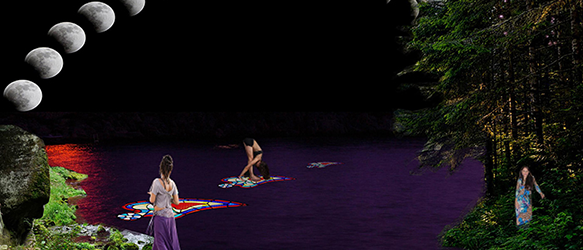

Issue #2: An Enchanted, Virtual Hotspring
Submissions due May 1, 2017

We are interested in collecting images, video, audio, writings, and ideas for creating an zine issue that serves as a "virtual hotspring". We would like to bring together works that explore the occult, medidation, yoga in all scenarios,
Esalen, and hot baths experiences.
Whether hot springs gives you anxiety or a sense of peace an comfort, we would like to see your perspective. What would you like to see at a virtual hotspirng? Let us know and collaborate with us!
Close